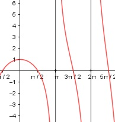

Aufgabe 185 f(x) = x * cot x x im Bogenmaß cos x f(x) = x * ------- sin x Erste Ableitung: Produkt-, Quotientenregel u = x, u' = 1 cos x v = ------- sin x a = cos x, a' = -sin x b = sin x, b' = cos x -sin x * sin x - cos x * cos x f'(x) = - --------------------------------- sin2 x -(sin2 x + cos2 x) -1 f'(x) = -------------------- = --------- sin2 x sin2 x cos x (x * --------)' sin x u = x, u' = 1 cos x -1 v = -------, v' = -------- sin x sin2 x cos x -1 f'(x) = 1 * ------- + x * -------- sin x sin2 x cos x * sin x – x f'(x)= -------------------- sin2 x Zweite Ableitung: Produkt-, Quotienten- und Kettenregel (cos x * sin x)' = u = cos x, u' = -sin x v = sin x, v' = cos x = -sin x * sin x + cos x * cos x = -sin2 x + cos2 x cos x * sin x – x (-------------------)′ = sin2 x u = cos x * sin x – x, uꞌ = -sin2 x + cos2 x – 1 v = sin2 x, vꞌ = 2 * sin x * cos x (-sin2 x + cos2 x – 1) * sin2 x = ---------------------------------- - sin4 x (2 * sin x * cos x) * (cos x * sin x – x) - ------------------------------------------- sin4 x -sin4 x - sin2 x * cos2 x – sin2 x = ------------------------------------ - sin4 x 2 sin2 x * cos2 x + 2x * sin x * cos x - ---------------------------------------- sin4 x -sin4 x - sin2 x * cos2 x – sin2 x = --------------------------------------- + sin4 x 2x * sin x * cos x + -------------------- sin4 x -sin4 x - sin2 x * (1 – sin2 x) – sin2 x + = ------------------------------------------- + sin4 x 2x * sin x * cos x + ---------------------- sin4 x -2sin2 x + 2x * sin x * cos x = ---------------------------------- = sin4 x 2sin x *(x * cos x - sin x) = ------------------------------ sin4 x 2(x * cos x – sin x) f''(x) = ----------------------- sin3 x Zur Beurteilung, ob f'''(x) ≠ 0: u = 2(x * cos x – sin x) u' = 2((x * cos x)ꞌ - cos x) (x * cos x)ꞌ = Produktregel: u = x, uꞌ = 1 v = cos x, vꞌ = -sin x u' 2(1 * cos x + -sin x * x - cos x) --- = ------------------------------------- = v sin3 x -2x = -------- sin2 x --> ist ≠ 0 für alle x ≠ 0, π, 2π Polstelle: sin x = 0 x = 0, π, 2π Hinweis: für x = 0 mit cos 0 0 f(0) = 0 * ------- = --- ist eine weitere sin 0 0 Betrachtung nötig. Symmetrie zur y-Achse bzw. zum Punkt (0|0): f(x) = -x * cot (-x) = -x * -cot (x) f(x) = x * cot x = f(x) --> Achsensymmetrie -f(x) = -x * cot x ≠ f(x) --> keine Punktsymmetrie Wertebereich: -∞ < f(x) < ∞ Schnittpunkt mit der y-Achse: x = 0 0 f(0) = --- siehe oben 0 Regel von l’Hospital: Zähler: (x * cos x)ꞌ = u = x, uꞌ = 1 v = cos x, vꞌ = -sin x = 1 * cos x + -sin x * x Nenner: (sin x)ꞌ = cos x cos x – sin x * x 1 - 0 ------------------- = ------- = 1 für x = 0 --> cos x 1 es ist eine hebbare Lücke, sie kann mit f(0) = 1 geschlossen werden. Sy(0|1) Definitionsbereich: 0 < x < 2π x ≠ 0, π, 2π Nullstellen: f(x) = 0 x * cot (x) = 0 x = 0 keine Nullstelle, hebbare Lücke cos x ------- = 0 |*sinx sin x cos x = 0 --> x = π/2, 3π/2 N1(π/2|0), N2(3π/2|0) Extrempunkte: f'(x) = 0 cos x * sin x – x ------------------- = 0 |*sin2 x sin2 x cos x * sin x – x = 0 für x = 0 --> f(0) = 1 hebbare Lücke 2(x * cos x – sin x) fꞌꞌ(0) = ---------------------- sin3 (x) 2(0 * 1 – 0) 0 fꞌꞌ(0) = -------------- = --- 0 0 Erste Anwendung der Regel von l’Hospital: Zähler: 2(x * cos x – sin x)ꞌ = u = x, uꞌ = 1 v = cos x, vꞌ = -sin x = 1 * cos x + -sin x * x – cos x = -x * sin x Nenner: (sin3 x)ꞌ = 3 * sin2 x * cos x -2sin x * x -2x --------------------- = --------------------- = 3 * sin2 x * cos x 3 * sin x * cos x -2 * 0 0 = ------------- = --- 3 * 0 * 12 0 Zweite Anwendung der Regel von l’Hospital: Zähler: (-2x)ꞌ = -2 Nenner: (3 * sin x * cos x)ꞌ = u = 3 * sin x, uꞌ = 3 * cos x v = cos x, vꞌ = -sin x -2 = ----------------------------------------- 3 * cos x * cos x + 3 * sin x * - sin x -2 für x --> 0 ist = ----------------------- = 3 * (cos2 x - sin2 x) -2 -2 = -------------- = ---- < 0 3(12 - 02) 3 --> Hochpunkt(0|1) Wendepunkte: f''(x) = 0 2(x * cos x – sin x) ----------------------- = 0 |*sin3 x sin3 x 2(x * cos x – sin x) = 0 |:2 x * cos x – sin x = 0 |:cos x sin x x - -------- = 0 cos x x – tan x = 0 Newton-Näherungsverfahren: Wertetabelle: x 4,4 4,5 4,6 x-tan x 1,3 -0,13 -4,26 Startwert: x = 4,5 1 (x – tan x)ꞌ = 1 - -------- cos2 x 4,5 – tan 4,5 -0,137 4,5 - ----------------- = 4,5 - --------- = 4,4936 1 -21,5 1 - ---------- cos2 4,5 4,4936 – tan 4,4936 4,4936 - ------------------------ = 1 1 - -------------- cos2 4,4936 0,00395137 = 4,4936 - ------------- = 4,4938 -20.32 1 f(4,4938) = 4,4938 * ------------ = 1 tan 4,4938 --> WP(4,4938|1) Graph:
